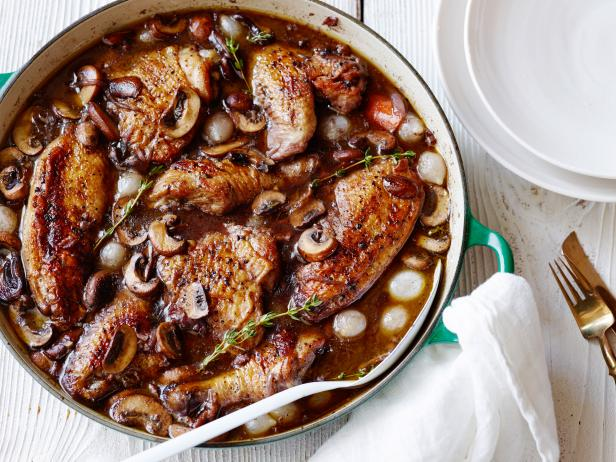
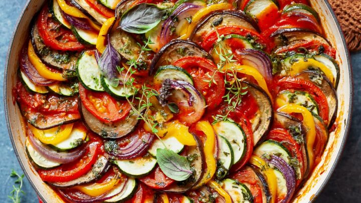
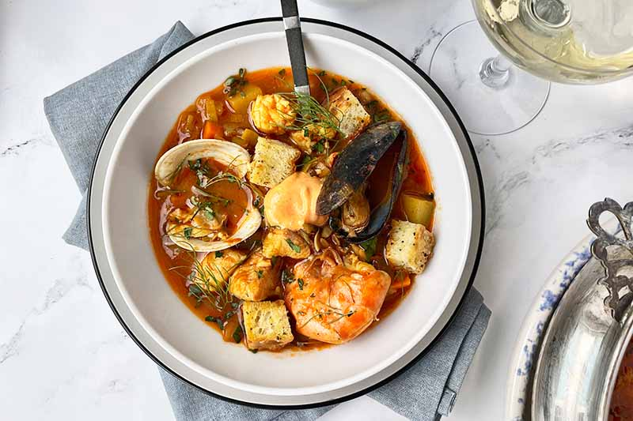
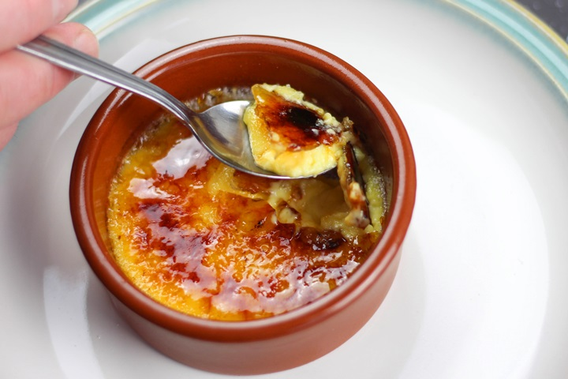
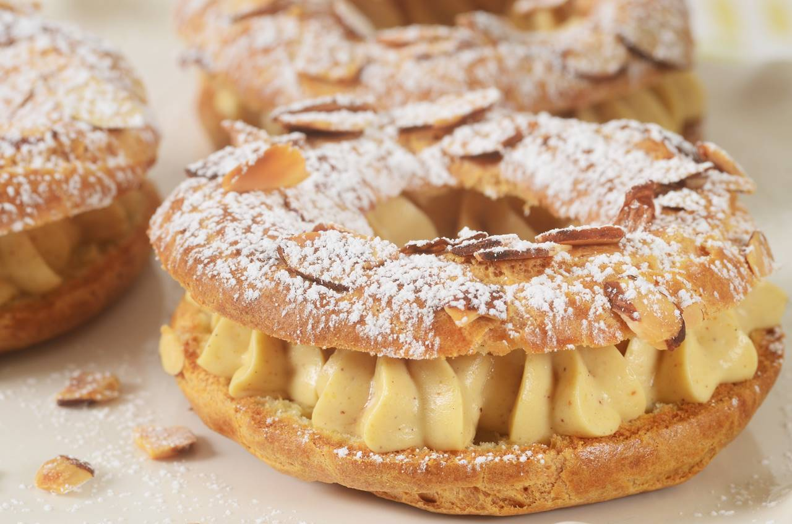

Beef bourguignon

Ingredients
- 1 tablespoon good olive oil
- 8 ounces dry cured center cut applewood smoked bacon, diced
- 2 1/2 pounds chuck beef cut into 1-inch cubes
- Kosher salt
- Freshly ground black pepper
- 1 pound carrots, sliced diagonally into 1-inch chunks
- 2 yellow onions, sliced
- 2 teaspoons chopped garlic (2 cloves)
- 1/2 cup Cognac
- 1 (750 ml.) bottle good dry red wine such as Cote du Rhone or Pinot Noir
- 1 can (2 cups) beef broth
- 1 tablespoon tomato paste
- 1 teaspoon fresh thyme leaves (1/2 teaspoon dried)
- 4 tablespoons unsalted butter at room temperature, divided
- 3 tablespoons all-purpose flour
- 1 pound frozen whole onions
- 1 pound fresh mushrooms stems discarded, caps thickly sliced
How to cook
- Preheat the oven to 250 degrees F.
- Heat the olive oil in a large Dutch oven. Add the bacon and cook over medium heat for 10 minutes, stirring occasionally, until the bacon is lightly browned. Remove the bacon with a slotted spoon to a large plate.
- Dry the beef cubes with paper towels and then sprinkle them with salt and pepper. In batches in single layers, sear the beef in the hot oil for 3 to 5 minutes, turning to brown on all sides. Remove the seared cubes to the plate with the bacon and continue searing until all the beef is browned. Set aside.
- Toss the carrots, and onions, 1 tablespoon of salt and 2 teaspoons of pepper in the fat in the pan and cook for 10 to 15 minutes, stirring occasionally, until the onions are lightly browned. Add the garlic and cook for 1 more minute. Add the Cognac, stand back, and ignite with a match to burn off the alcohol. Put the meat and bacon back into the pot with the juices. Add the bottle of wine plus enough beef broth to almost cover the meat. Add the tomato paste and thyme. Bring to a simmer, cover the pot with a tight-fitting lid and place it in the oven for about 1 1/4 hours or until the meat and vegetables are very tender when pierced with a fork.
- Combine 2 tablespoons of butter and the flour with a fork and stir into the stew. Add the frozen onions. Saute the mushrooms in 2 tablespoons of butter for 10 minutes until lightly browned and then add to the stew. Bring the stew to a boil on top of the stove, then lower the heat and simmer for 15 minutes. Season to taste.
- To serve, toast the bread in the toaster or oven. Rub each slice on 1 side with a cut clove of garlic. For each serving, spoon the stew over a slice of bread and sprinkle with parsley.
Coq au Vin

Ingredients
Yield: 4 servings
- 3pounds chicken legs and thighs
- 2½teaspoons kosher salt, more as needed
- ½teaspoon freshly ground black pepper, more to taste
- 3cups hearty red wine, preferably from Burgundy
- 1bay leaf
- 1teaspoon chopped fresh thyme leaves
- 4ounces lardons, pancetta or bacon, diced into ¼-inch pieces (about 1 cup)
- 3tablespoons extra-virgin olive oil, more as needed
- 1large onion, diced
- 1large carrot, peeled and diced
- 8ounces white or brown mushrooms, halved if large, and sliced (about 4 cups)
- 2garlic cloves, minced
- 1teaspoon tomato paste
- 1tablespoon all-purpose flour
- 2tablespoons brandy
- 3tablespoons unsalted butter
- 8ounces peeled pearl onions (about 12 to 15 onions)
- Pinch sugar
- 2slices white bread, cut into triangles, crusts removed
- ¼cup chopped parsley, more for serving
How to Cook
- Season chicken with 2¼ teaspoons salt and ½ teaspoon pepper. In a large bowl, combine chicken, wine, bay leaf and thyme. Cover and refrigerate for at least 2 hours or, even better, overnight.
- In a large Dutch oven or a heavy-bottomed pot with a tightfitting lid, cook lardons over medium-low heat until fat has rendered, and lardons are golden and crisp, 10 to 15 minutes. Using a slotted spoon, transfer lardons to a paper-towel-lined plate, leaving rendered fat in pot.
- Remove chicken from wine, reserving the marinade. Pat chicken pieces with paper towels until very dry. Heat lardon fat over medium heat until it’s just about to smoke. Working in batches if necessary, add chicken in a single layer and cook until well browned, 3 to 5 minutes per side. (Add oil if the pot looks a little dry.) Transfer chicken to a plate as it browns.
- Add diced onion, carrot, half the mushrooms and the remaining ¼ teaspoon salt to pot. Cook until vegetables are lightly browned, about 8 minutes, stirring up any brown bits from the pot, and adjusting heat if necessary to prevent burning.
- Stir in garlic and tomato paste and cook for 1 minute, then stir in flour and cook for another minute. Remove from heat, push vegetables to one side of pot, pour brandy into empty side, and ignite with a match. (If you’re too nervous to ignite it, just cook brandy down for 1 minute.) Once the flame dies down, add reserved marinade, bring to a boil, and reduce halfway (to 1½ cups), about 12 minutes. Skim off any large pockets of foam that form on the surface.
- Add chicken, any accumulated juices and half the cooked lardons to the pot. Cover and simmer over low heat for 1 hour, turning halfway through. Uncover pot and simmer for 15 minutes to thicken. Taste and add salt and pepper, if necessary.
- Meanwhile, melt 1 tablespoon butter and 2 tablespoons oil in a nonstick or other large skillet over medium-high heat. Add pearl onions, a pinch of sugar and salt to taste. Cover, reduce heat to low and cook for 15 minutes, shaking skillet often to move onions around. Uncover, push onions to one side of skillet, add remaining mushrooms, and raise heat to medium-high. Continue to cook until browned, stirring mushrooms frequently, and gently tossing onions occasionally, 5 to 8 minutes. Remove onions and mushrooms from skillet, and wipe it out.
- In same skillet, melt 2 tablespoons butter and 1 tablespoon oil over medium heat until bubbling. Add bread and toast on all sides until golden, about 2 minutes per side. (Adjust heat if needed to prevent burning.) Remove from skillet and sprinkle with salt.
- To serve, dip croutons in wine sauce, then coat in parsley. Add pearl onions, mushrooms and remaining half of the cooked lardons to the pot. Baste with wine sauce, sprinkle with parsley and serve with croutons on top.
Ratatouille

Ingredients
- for 8 servings
- VEGGIES
- 2 eggplants
- 6 roma tomatoes
- 2 yellow squashes
- 2 zucchinis
For the Sauce
- 2 tablespoons olive oil
- 1 onion, diced
- 4 cloves garlic, minced
- 1 red bell pepper, diced
- 1 yellow bell pepper, diced
- salt, to taste
- pepper, to taste
- 28 oz can of crushed tomatoes(795 g)
- 2 tablespoons chopped fresh basil, from 8-10 leaves
HERB SEASONING
- 2 tablespoons chopped fresh basil, from 8-10 leaves
- 1 teaspoon garlic, minced
- 2 tablespoons Chopped fresh parsley
- 2 teaspoons fresh thyme
- salt, to taste
- pepper, to taste
- 4 tablespoons olive oil
How to cook
- Preheat the oven for 375˚F (190˚C).
- Slice the eggplant, tomatoes, squash, and zucchini into approximately ¹⁄₁₆-inch (1-mm) rounds, then set aside.
- Make the sauce: Heat the olive oil in a 12-inch (30-cm) oven-safe pan over medium-high heat. Sauté the onion, garlic, and bell peppers until soft, about 10 minutes. Season with salt and pepper, then add the crushed tomatoes. Stir until the ingredients are fully incorporated. Remove from heat, then add the basil. Stir once more, then smooth the surface of the sauce with a spatula.
- Arrange the sliced veggies in alternating patterns, (for example, eggplant, tomato, squash, zucchini) on top of the sauce from the outer edge to the middle of the pan. Season with salt and pepper.
- Make the herb seasoning: In a small bowl, mix together the basil, garlic, parsley, thyme, salt, pepper, and olive oil. Spoon the herb seasoning over the vegetables.
- Cover the pan with foil and bake for 40 minutes. Uncover, then bake for another 20 minutes, until the vegetables are softened.
- Serve while hot as a main dish or side. The ratatouille is also excellent the next day--cover with foil and reheat in a 350˚F (180˚C) oven for 15 minutes, or simply microwave to desired temperature.
- Enjoy!
Cassoulet
Ingredients
- 1 ½ tablespoons Duck Fat* (or butter may be substituted)
- 8 bone-in skin-on Chicken Thighs , patted with paper towels and lightly salted and peppered
- 1 pound Garlic Sausages , uncooked**
- ½ pound thick-cut Bacon , cut across the bacon into 1 inch pieces 1 medium Yellow Onion, chopped
- 1 medium Yellow Onion chopped
- 2 small Carrots , chopped (unpeeled)
- 1 large stalk Celery , chopped
- 1 tablespoon fresh Italian Parsley , diced
- 1 teaspoon Herbes de Provence
- 1 29-ounce can Cannellini (or White Kidney) Beans drained
- 4 cups (1 quart) Low Sodium Chicken Stock
- 3 large Garlic Cloves , minced
- 2 cups fresh Soft Bread crumbs from a baguette (I used a gluten-free Baguettes)+
How to Cook
- Preheat the oven to 350 degrees.
- In a 5 ½ quart (or larger) pot or French/Dutch oven, liquefy the duck fat at medium heat.
- Add chicken thighs skin down in the bottom of the pan. Allow to cook for 8 minutes on Medium to Medium High, periodically checking to be sure the skin is not sticking to the pan (if it is gently slide a heat-proof spatula underneath to free the skin).
- Using heatproof tongs, turn the chicken thighs over and cook for an additional 3 minutes. Remove from pan to a plate; set aside.
- Add the sausages to the same pan (be careful of hot fat splattering!) and cook until lightly browned on each side (approximately 3-4 minutes total). Remove and set aside (can be added to the plate with the chicken)
- Add the bacon to the pan. Sauté to render the fat only (about 3 minutes). NOTE: The fat will turn a gray color and be more translucent though the bacon will still be supple and pliable. Remove with a heatproof slotted spoon, allowing excess fat to drain back into the pan before setting the bacon aside.
- Reserve 2 tablespoons of the pan fat (leave it in the pan) and discard the remaining fat.
- Add the onions to the pan and sauté over medium-high heat scraping all the browned bits from the bottom and sides of the pan. Sauté until the onions begin to turn translucent but are not limp. TIP: if you allow the onions to sit before stirring they will pick up more of the pan drippings.
- Add the carrots, celery, parsley, herbes de Provence, beans and chicken stock; stir to combine.
- Add the bacon to the pot; stir to combine.
- Insert the chicken thighs and sausage into the stew so they are covered.
- In a small bowl combine the bread crumbs and diced garlic. Sprinkle it evenly over the stew.
- Bake for 1 hour and 15 minutes, periodically pressing the bread crumbs into the stew which will help thicken it.
- Place the stew underneath the broiler to slightly brown the top crumbs and remove from oven.
- Allow to sit for a few minutes, cut sausages into 2 inch pieces stirring them back into the stew, and serve. The stew is even more flavorful the second day too!
Bouillabaisse

Ingredients
Sauce Rouille:
- 1 tablespoon hot fish stock or clam broth
- 2 cloves garlic, peeled
- 1 small red hot pepper
- 1/2 teaspoon salt
- 1/4 cup soft white bread, pulled into bits
- 1/2 cup olive oil
Bouillabaisse:
- 3 pounds of at least 3 different kinds of fish fillets (such as sea bass, red mullet, haddock, halibut, cod, conger, or red porgy), cut into 2-inch pieces
- 1 pound mussels or clams
- 1 pound squid or crab
- 1/4 cup extra virgin olive oil
- 1 cup onions, thinly sliced
- 2 leeks, white and light green parts only, thinly sliced
- 1/4 fennel bulb, thinly sliced, or 1 teaspoon fennel seeds
- 2 cloves garlic, crushed
- 3 large tomatoes, roughly chopped
- 1 bay leaf
- 3 sprigs fresh thyme
- 1/2 teaspoon saffron threads
- 2 teaspoons salt
- 1 long, wide strip orange zest
- 1 cup clam juice or fish stock
- 1/4 teaspoon freshly ground black pepper
- Sliced rustic French bread, plain or toasted
How to cook
- Put the hot fish stock or clam broth into the bottom of a blender. Add the garlic and red hot pepper, salt and bread. Blend until very smooth. With the blender still running, add olive oil slowly and stop the blending as soon as the oil disappears. Set aside.
- Cook the onions, leeks, and fennel:
- Heat 1/4 cup of olive oil in a large (6-8 quart) pot on medium high heat. When the oil is hot, add the onions, leeks, and fennel. Stir to coat the vegetables with the olive oil. Cook on medium heat until softened but not browned, about 10-15 minutes.
- Add the garlic, tomatoes, salt, and aromatics:
- Add the crushed garlic, chopped tomatoes, bay leaf, thyme, saffron, salt, and orange zest.
- Cook until the tomatoes are soft and broken down, about 10 more minutes.
Add the fish:
- Bring 2 cups of water to a boil. Lay the fish pieces over the vegetable mixture and pour over with 2 cups of boiling water. Add clam juice or fish stock. Bring everything to a boil, reduce to a simmer, and cook, uncovered, for about 5 minutes.
- Add the shellfish:
- Add the mussels, squid, and/or crab, pushing aside the fish so that the shellfish is now covered in liquid, and simmer for 10 minutes more, uncovered.
- Add freshly ground black pepper, and more salt to taste. Remove the bay leaves, thyme sprigs, and orange zest from the broth.
- Serve with bread and rouille:
- To serve, remove the fish and shellfish to a platter to keep warm. Place a thick slice of crusty French bread (plain or lightly toasted) in each bowl and put a dollop of the rouille sauce on top of the bread.
- Ladle the soup broth over the bread, and then portion out fish and shellfish onto the bowls.
France Traditional Desserts
Macaron
Ingredients
- For The Macarons
- 100 g egg whites
- 100 g granulated sugar
- 100 g almond flour
- 100 g powdered sugar
- Pinch salt
- Food coloring (optional)
- For The Filling
- 6 Tablespoons unsalted butter, room temperature
- 2 cups powdered sugar
- 1 teaspoon vanilla extract
- pinch of salt
How to make
- Preheat the oven to 300°F. Line two baking sheets with parchment paper. Set aside.
- Heat a small pot of water over medium-low heat until it steams. In the bowl of a stand mixer, combine egg whites and roughly 3 tablespoons of the granulated sugar. Place bowl over steaming pot, creating a double boiler.
- Whisk egg whites and sugar continuously until sugar melts completely and egg whites become white and frothy, about 1 minute. Remove from heat and place the bowl back onto the stand mixer.
- Fit stand mixer with whisk attachment and whisk on high speed while slowly adding in the remaining granulated sugar. Add the food coloring (if using). Continue to whisk for another 3-4 minutes, until stiff meringue peaks form. Congratulations, you just made a Swiss meringue!
- Next, sift together the almond flour, powdered sugar, and salt twice, then gently shake the mixture into the meringue bowl.
- Place the bowl back onto a stand mixer, still fitted with a whisk attachment. Turn the mixer to medium speed and whisk for 5 seconds (just enough to combine the almond flour mixture with the egg whites).
- Stop the mixer and use a large spatula to hand-mix the batter for the remainder of your mixing. You’ll want to gently fold the mixture with your spatula, scooping up the batter from the outside of the bowl and gently twisting it into the center in a circle-like manner. You’ll know to stop mixing when you can make a figure-eight out of the dripping batter without the batter breaking. If you cannot yet make a figure-eight, repeat the process if necessary, and try the figure-eight again. The best way to describe the perfect consistency is like slow moving lava. It should give, but only slightly, like in slow-motion.
- Once your batter is the correct consistency, scoop it into a large pastry bag fitted with a 1 inch tip. Pipe silver dollar-sized circles onto prepared baking sheets, keeping about 1.5 inches between each meringue. Bang baking sheet on counter two times to remove any air bubbles. Sprinkle tops with a little sea salt as a garnish.
- Let the macarons air dry for 15 to 30 minutes or until dry to the touch. Just pop them into the prepared oven for 13 minutes, turning around halfway through, then allow to cool completely before removing from baking sheets.
- combined, about 2 minutes.
- Scoop mixture into a piping bag fitted with a 1/2 inch tip and set aside until ready to assemble the macarons.
- Once the macarons are completely cool to the touch, pipe the filling onto a macaron and sandwich with another macaron. Repeat with all macarons.
Crème Brûlée

Ingredients
- 6 large egg yolks
- 1/3 cup (70 grams) granulated sugar
- 2 cups (480 ml) heavy whipping cream
- 1 and 1/2 teaspoons pure vanilla extract
- 2 tablespoons (25 grams) granulated sugar (for the topping)
How to make
- Preheat the oven to 325°F (163°C). Place a large pot of water on the stove to boil.
- In a large mixing bowl, whisk together the egg yolks and sugar until well blended and it just starts to lighten in color. Set aside.
- Pour the heavy whipping cream in a medium-sized saucepan and heat over medium heat. Stir occasionally until the cream is warm and bubbling around the edges. Remove the cream from the heat and stir in the vanilla extract.
- Slowly pour about 1/2 cup of the warm heavy whipping cream into the egg and sugar mixture making sure to whisk well as you're pouring it in. Then, slowly pour in the remaining cream and continue whisking until fully combined. If there's a thin layer of foam on top of the mixture, you can skim this off with a spoon at this point.
- Strain the mixture through a fine mesh strainer, then evenly distribute between four 6-ounce ramekins.
- Pour the boiling water into an 8-inch square baking pan (or larger pan if you prefer) about 1/3 of the way full. Carefully place the ramekins in the baking dish. The water should come about halfway up the sides of the ramekins. If needed, add a little more boiling water to the pan.
- Carefully place the baking pan in the oven. Bake at 325°F (163°C) for 35 to 45 minutes or until the edges are set and the center is slightly jiggly. Remove from the oven and carefully remove the ramekins from the pan using tongs or pot holders and transfer to a wire rack to cool completely. Once cooled, cover tightly and refrigerate for at least 4 hours or overnight.
- Once chilled, blot the tops of each custard with a paper towel to remove any excess moisture. Sprinkle 1 and 1/2 teaspoons of sugar on top of each custard, shake it around into one even layer, then use a small kitchen torch to carefully caramelize the sugar. Allow the sugar to harden for 1 to 2 minutes, then serve and enjoy, or refrigerate for a few hours until ready to serve.
Paris Brest

Ingredients
- Praline Paste
- 3 tbsp (45 ml) water
- 1/3 cup (70 g) caster sugar
- 1/4 cup (60 ml) corn syrup (see notes)
- 1/2 cup (90 g) toasted hazelnuts (see notes)
- 1/2 cup (90 g) flaked almonds (see notes)
- 1/4 tsp salt
- 1/3 tsp bicarb soda
Pastry Cream
- 1/2 cup (75 g) all-purpose flour
- 1/4 cup (50 g) caster sugar
- 1/2 tsp salt
- 5 egg yolks
- 2 cups (500 ml) whole milk hot (see notes)
- 1 tsp vanilla bean paste
- 1 cup (250 g) unsalted butter cold and cubed
Choux Pastry
- 1 cup (250 ml) water
- 1/3 cup (70 g) unsalted butter
- 1 tbsp sugar
- 1/2 tsp salt
- 1 cup (150 g) all-purpose flour
- 4 large eggs see notes
- 1 cup (250 g) unsalted butter softened for buttercream portion
Decorations
- 1 egg
- 1 tbsp water
- 1/2 cup flaked almonds
How to make
- To a large saucepan, add the water, sugar, glucose syrup, toasted hazelnuts, almonds and salt. Use a wooden spoon to mix on medium high speed until the mixture turns a deep golden colour, about 3 minutes. Add the bicarb soda and stir until well combined. Transfer to a well-oiled baking tray and spread out. Allow to set completely. Break into smaller pieces and place in a food processor. Process until the mixture turns to a smooth paste. You may need to stop the processor and scrape down the bowl to make sure it mixes properly. Set aside.
Pastry Cream
- To a large mixing bowl, add the flour, sugar and salt and mix using a mixing spoon. Add the egg yolks and mix until a paste forms. Add the milk a little at a time, mixing each time. Once a loose mixture forms, add the remaining milk and whisk until combined. Transfer to a large pot and stir on medium heat until mixture thickens, about 4-5 minutes. Add the vanilla bean paste and half the cold butter and stir to combine. Then add the remaining butter and stir to combine.
- Transfer to a large bowl with a sieve on top and pour the mixture into the sieve. Use a spatula or spoon to run through. Cover with plastic wrap and chill in the fridge for 3 hours.
- To finish the pastry, add the praline paste to the pastry cream and mix until well combined.
- Add the 1 cup of softened butter to a mixing bowl and beat until pale and fluffy, about 5 minutes. Add the pastry cream a little at a time while the mix is on high speed. Once all of the mixture is combined together, set aside. When ready to use, use a spatula to stir until smooth. Add to a large piping bag with a large open star tip.
Choux Pastry
- Preheat your oven to 190C / 325F. Line a large baking tray with baking paper. Set aside.
- To a large saucepan, add the water, butter, salt and sugar and stir until mixture bubbles and butter melts. Take off the heat and add the flour. Mix using a wooden spoon immediately. Once the mixture forms a dough, place back on medium high heat and stir for about 4 minutes or until the dough begins sticking to the bottom of the saucepan. Take off the heat and allow to cool for 10 minutes.
- You can mix this dough by hand using a wooden spoon. I added mine to the bowl of a stand mixer fitted with a paddle attachment. And began mixing on low speed for 30 seconds before adding the first egg. Allow the egg to mix in before adding the next egg. You may not need all 4 eggs. What you’re looking for is a shiny, glossy and smooth dough mixture that when stretched between two fingers, does not break. See notes below for more information.
- Place the dough mixture into a piping bag fitted with a medium round tip.
- Place a round 6” cake tin or plate on top of the baking paper and use a pen to trace around it. Dab the corners of the baking paper with choux pastry dough and turn over onto the baking tray. This will help it stick and stop it from flying around in the oven.
- Pipe a ring of dough around the traced circle. And then pipe another one directly on top. Brush with egg wash (1 egg whisked with 1 tbsp water or milk) and then sprinkle with flaked almonds. Bake for 35-40minutes. Once baked allow to cool completely in the oven. This will help prevent it from collapsing.
- Once baked and cooled, use a serrated knife to carefully cut in half. It will be hollow inside. Pipe some pastry cream in the hollowed-out part of one half of the pastry rings. Then use a spoon or offset spatula to smoothen out flat. Then pipe swirls of pastry cream. Place the second half on top and finish with a dusting of powdered sugar.